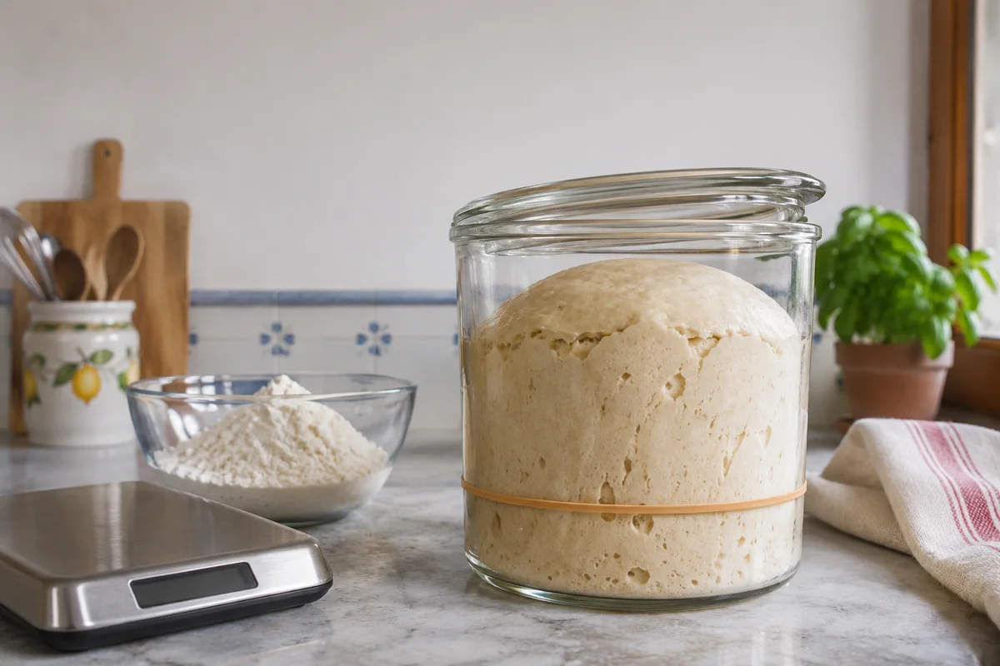

PANE E PIZZA · FASE 1 · VERIFICA 19 NOVEMBRE 2026
Pasta madre solida: creala da zero, un giorno alla volta
Ti servono soltanto farina, acqua, una bilancia e un barattolo. Trovi sotto cosa fare, a che ora, dove mettere l'impasto e come riconoscere una pasta madre veramente attiva.

1. Prepara il necessario
Prendi una bilancia digitale, una ciotola, un cucchiaio, un barattolo trasparente a pareti abbastanza dritte da almeno 1,5 litri, un elastico e un termometro per ambiente. Pulisci bene mani e utensili prima di cominciare.
Dove tenere il barattolo: su un ripiano pulito, riparato dal sole, con temperatura stabile di 24–26 °C. Non appoggiarlo su termosifoni o elettrodomestici caldi. Se usi il forno spento con la sola luce accesa, misura la temperatura: non lasciare che salga eccessivamente.
2. Giorno 1, ore 08:00: la prima miscela
- Versa 200 g di farina nella ciotola. Aggiungi 100 g di acqua poco alla volta, mescolando con il cucchiaio.
- Lavora con le mani per 3–5 minuti, fino a ottenere una massa compatta e omogenea, senza farina asciutta. Forma un panetto.
- Metti il panetto nel barattolo. Premi appena la base per renderne visibile il livello, metti l'elastico all'altezza della parte superiore e appoggia il coperchio senza chiuderlo ermeticamente.
- Lascia il barattolo a 24–26 °C per 72 ore. Controllalo una volta al giorno senza aggiungere niente.
Non deve necessariamente gonfiarsi subito. Anche se compaiono bolle, non è ancora pronto per fare il pane.
3. Giorno 4, ore 08:00: il primo rinfresco
Rinfrescare significa conservare una parte della coltura e darle nuova farina e acqua.
- Apri il barattolo. Pesa 100 g del composto precedente in una ciotola e scarta il resto. Gli scarti dei primi giorni non vanno usati per cucinare.
- Aggiungi 100 g d'acqua ai 100 g di pasta madre. Dividi il panetto con le dita e lavoralo finché si ammorbidisce.
- Unisci 200 g di farina tipo 0. Impasta per 3–5 minuti fino a ottenere un panetto compatto, senza zone secche.
- Mettilo nel barattolo pulito, segna il nuovo livello con l'elastico, copri senza sigillare e riponilo di nuovo a 24–26 °C.
4. Il calendario da seguire
5. Quando è davvero pronta?
Subito dopo il rinfresco metti il panetto in un contenitore cilindrico, segna il livello e tienilo a circa 28 °C. Una pasta madre molto attiva triplica il volume in circa 4 ore. Ripeti la prova in più rinfreschi: deve essere un risultato stabile.
Attenzione: triplica il volume, non il peso. Se cresce poco o lentamente, continua a rinfrescare. La maturazione può richiedere più di due settimane.
Se non riesci a mantenere 28 °C, controlla comunque la crescita a temperatura stabile; i tempi saranno diversi e non puoi usare le quattro ore come termine rigido.
6. Come mantenerla dopo la maturazione
Per un nuovo rinfresco conserva 100 g di pasta madre, aggiungi 200 g farina + 100 g acqua e impasta come sopra. Dopo un breve avvio della fermentazione puoi conservarla in un recipiente pulito in frigorifero, intorno ai 4 °C. Rinfrescala almeno una volta a settimana.
Prima di panificare, toglila dal frigorifero, rinfrescala e aspetta che torni a crescere in modo regolare. Non usare il lievito ancora debole come se fosse maturo.
Fonti e limiti della guida
- Istituto Zooprofilattico Sperimentale delle Venezie, Pane e prodotti da forno, capitolo sulla pasta madre: preparazione, rinfreschi e prova di crescita.
- Colorado State University Extension, Sourdough Starter Best Practices: igiene e segnali di contaminazione, revisione ottobre 2025.
Le quantità in grammi seguono il metodo concordato per Per Me. I calendari sono una traccia operativa: la velocità effettiva dipende da temperatura, farina e attività della coltura. Non è stata documentata una prova di laboratorio o una revisione scientifica indipendente di questa specifica ricetta.
Leggi anche: come creare il LI.CO.LI.